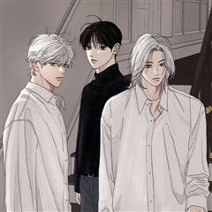
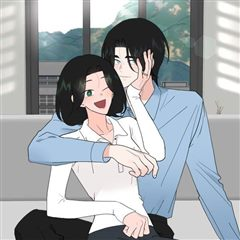

연습생 같은 웹툰 추천

연습생 · 마루
연습생 재밌게 봤다면 이 웹툰들도 좋아할 거예요. 같은 장르이면서 BL, 설렘폭발 같은 요소가 겹치는 작품을, 겹치는 요소가 많은 순서로 20개 골랐어요.
2026-10-09 기준 · 네이버웹툰·카카오웹툰·레진코믹스 · 성인 작품 제외
내 취향으로 직접 골라 추천받기 →-
1
 카카오웹툰
카카오웹툰목숨을 다해 꼬셔라
외모와 능력, 분위기까지 갖춘 완벽한 남자 호연우. 하지만 연애 상대로는 최악, 가벼운 만남만 추구하고 진지한 상대는 가차 없이 차버린다. 그걸 알면서도 홀리는 사람이 넘쳐 '연우' 대신 '여우'라고 불리는 그는 사실... 진짜 여우다! 여우 수인…
BL설렘폭발로맨스BL·GL카카오웹툰에서 보기 → -
2
 카카오웹툰
카카오웹툰멜로합시다
배우 '영민'의 오랜 팬, '인의'. 그는 '영민'을 쫓아 연기자의 꿈을 꾸게 되고, 그가 겸임 교수로 오는 대학에 합격한다. '영민'과 꿈같은 일상을 보내게 된 '인의'는 점점 '영민'에게 사심을 품게 되며 개인적으로 친해지고 싶어 한다. 그러나,…
BL설렘폭발로맨스BL·GL카카오웹툰에서 보기 → -
3
 카카오웹툰
카카오웹툰비엘로 빌런 탈출
평범한 삶을 살던 윤치환은 어느 날 정체불명의 가상 세계에 떨어진다. 현실로 돌아가기 위해서는 시스템이 부여한 미션, '강정혁과 BL 스토리를 완성하라'는 조건을 달성해야만 한다. 치환은 살아남기 위해 정혁과 손을 잡지만, 서로를 이용하던 관계는 함…
BL설렘폭발로맨스BL·GL카카오웹툰에서 보기 → -
4

카카오웹툰무색의 빛
좋아하는 음악도 좋아하는 색깔도 모르겠는 무색무취 서진에게 오색 빛깔의 주환이 나타난다. 서진은 주환의 존재를 보는 순간 사랑에 빠지지만 주환의 마음은 알 수 없다. 가까워진 줄 알면 멀어지고 보이지 않을 때쯤 다시 곁으로 오는 주환에 서진은 정신을…
BL로맨스BL·GL카카오웹툰에서 보기 → -
5
![황태자의 용으로 태어났다 [연재] 표지](../../thumbs/lezhin/5519470412627968.jpg) 레진코믹스
레진코믹스황태자의 용으로 태어났다 [연재]
장래 유망한 대학생인 나, 강찬영은 누군가에게 의문의 죽임을 당한 뒤 <황태자와 드래곤>이라는 게임 속 인물로 환생했다. 정확히 말하면 황태자에게 처치당할 운명인 보스, 검은 드래곤 '인페르노’로! 이제부터 내 목표는 운명을 바꾸는 거다. 그런데-…
BL설렘폭발로맨스BL·GL레진코믹스에서 보기 → -
6
 카카오웹툰
카카오웹툰남편을 내 편으로 만드는 방법
판타지 소설 속 남편의 손에 죽는 악역 조연, ‘루드베키아’가 되었다. 이 세계의 망할 아버지는 내 정략결혼 상대를 또 물어왔다. 문제는 그 상대가 바로 날 죽이게 될 남편이라는 것! 일단은 살길을 찾아야 한다. 북부 사람들에게 최대한 무해하게 보이…
설렘폭발로맨스카카오웹툰에서 보기 → · 남편을 내 편으로 만드는 방법 같은 웹툰 → -
7
 카카오웹툰
카카오웹툰남편은 됐고, 돈이나 벌렵니다
여친 있는 남자의 아내가 되어 버렸다. 음, 건드리지 말아야겠지? “그럼 넌 바닥에서 자.” “뭐?” 싫은 눈치다. 그래, 바닥은 딱딱하지. 그렇다면 어쩔 수 없다. “손만 잡고 잘게. 누나 믿지?” 그런데 어쩌다 남편과 첫날밤에 침대를 부숴 버린…
설렘폭발로맨스카카오웹툰에서 보기 → · 남편은 됐고, 돈이나 벌렵니다 같은 웹툰 → -
8
 카카오웹툰
카카오웹툰남주의 입양딸이 되었습니다
"아이를 입양한다” 어느 날 갑자기 떨어진 북부의 주인 보레오티의 폭탄 발언. 그리고 기적처럼 만난 “검은색”을 지닌 아이. 그런데… “근☆육이 제일 좋아~ ☆불끈불끈☆ 모여라~ ٩(๑˃́ꇴ˂̀๑)۶” “이두근 (ง˙∇˙)ว, 삼두근 (ง˙∇˙) ง…
설렘폭발로맨스카카오웹툰에서 보기 → · 남주의 입양딸이 되었습니다 같은 웹툰 → -
9
 카카오웹툰
카카오웹툰내 남자 주인공의 아내가 되었다
남주 여주 커플의 아름다운 사랑으로 저주받은 용과 마물 그리고 최종 보스의 영혼까지 처참하게 박살 내는 소설 <황제와 성녀> "……하하, 차라리 지금 죽으면 좀 편히 갈 수 있으려나." 천재 마법사로 칭송받게 될 찬란한 장래, 그것보다 원하는 건 안…
설렘폭발로맨스카카오웹툰에서 보기 → · 내 남자 주인공의 아내가 되었다 같은 웹툰 → -
10
 네이버웹툰
네이버웹툰세기말 풋사과 보습학원
어릴 때 알던 재수없던 놈이 더 재수없는 놈이 되어 돌아왔다! 중3 황미애의 옆 빌라에 어릴 때 잠깐 시골에서 봤던 김철이 이사 와 같은 학교 같은 반이 되고 '철이와 미애'라 놀림 받자 김철은 미애를 불쾌해하며 피한다. 너만 불쾌한 줄 알아? 나쁜…
설렘폭발로맨스네이버웹툰에서 보기 → · 세기말 풋사과 보습학원 같은 웹툰 → -
11
 카카오웹툰
카카오웹툰여보, 나 파업할게요
2회차 결혼 생활, 돌연 파업 선언?! 결혼 생활 10년 동안 무뚝뚝하고 전쟁밖에 모르던 남편 제스터 옆에서 고생만 하다 불치병으로 죽은 카시아. 하지만 눈을 떠보니 10년 전 결혼 후 첫 날로 돌아와 있었다. 어차피 불치병으로 죽을 몸, 카시아는…
설렘폭발로맨스카카오웹툰에서 보기 → · 여보, 나 파업할게요 같은 웹툰 → -
12
 카카오웹툰
카카오웹툰돈으로 약혼자를 키웠습니다
넘치는 재력, 빼어난 외모. 일리아 블로든의 인생은 완벽했다. 약혼자의 바람을 목격하기 전까지는. "취향, 취미, 내 모든 걸 바꾸고, 바라는 모든 걸 들어줬는데... 더 이상은 호구처럼 살지 않을 거야. 파혼해 주겠어!" 완벽한 파혼을 위한 새로운…
설렘폭발로맨스카카오웹툰에서 보기 → · 돈으로 약혼자를 키웠습니다 같은 웹툰 → -
13

카카오웹툰재워주는 사이
지방에서 올라와 허름하고 낡은 집에서 살던 '태은' 예쁜 집은 애저녁에 포기했다. 조금이라도 아껴보려고 꾸역꾸역 살지만 좋은 집에 살고 싶은 욕망은 나날이 커져만 간다. 좋은 집에 혼자 살지만 연재 스트레스에 키우던 고양이를 떠나보낸 상처로 잠 하나…
설렘폭발로맨스카카오웹툰에서 보기 → · 재워주는 사이 같은 웹툰 → -
14
 카카오웹툰
카카오웹툰비에 젖은 흔적들이다
그날 내가 잃어버린 것은 너일까, 나일까. 그리고 내가 다시 찾은 것은 나일까, 너일까. 아니면 우리일까. 14년 전 그날 홀로 남겨진 동경은 갈 길을 잃은 채 그 자리에 멈춰버렸다. 차가운 세상에 대한 믿음도 유대도 기대도 없다. 절망도 없다. 나…
설렘폭발로맨스카카오웹툰에서 보기 → · 비에 젖은 흔적들이다 같은 웹툰 → -
15
 네이버웹툰
네이버웹툰마른 가지에 바람처럼
남편을 잃고, 아이를 빼앗기고, 이제 생매장을 눈 앞에 둔 과부 리에타. 그 곳에 ‘미친 폐황자’로 불리는 저주받은 땅, 악시아스 성의 대공. 킬리언이 나타났다. 그녀를 데려가겠다고 말하는 킬리언이 인사를 건넨다. “안녕, 요부”
설렘폭발로맨스네이버웹툰에서 보기 → · 마른 가지에 바람처럼 같은 웹툰 → -
16
![너의 페로몬이 좋아 [연재] 표지](../../thumbs/lezhin/5425144005328896.jpg) 레진코믹스
레진코믹스너의 페로몬이 좋아 [연재]
외모, 집안, 어느 것 하나 빠지지 않던 베타 윤가람! 갑자기 오메가가 되었다...?! 계속되는 이상증세에 꼬여 드는 알파까지 빠르게 지쳐가는데... 이상하게 오윤 앞에서는 아무렇지 않다. 같은 알파인데, 오윤은 뭐가 다른 거지? 윤가람은 오메가의…
BL설렘폭발BL·GL레진코믹스에서 보기 → -
17
![페이트 메이트 [개정판][연재] 표지](../../thumbs/lezhin/5084486848151552.jpg) 레진코믹스
레진코믹스페이트 메이트 [개정판][연재]
알파인 동시에 오메가인 특이형질 때문에 베타 전용 기숙사에 입소하게 된 세현. 깔끔하고 싹싹한 룸메이트 준후를 만나 운이 좋다고 생각하고 있었는데... 준후도 자신처럼 형질을 숨기고 베타 기숙사에 들어온 것임을 알게 된다. 심지어 준후의 형질은 알파…
BL설렘폭발BL·GL레진코믹스에서 보기 → -
18
 네이버웹툰
네이버웹툰내향남녀
MBTI IIIIII!!!!! 극 I 의 내향형 인간들이 만났다! 사이다 없이는 목이 메어 볼 수 없는 쌍방오해 트라우마 극복 연애기 학교에서 존재감 없기로 둘째가라면 서러울 남자유(여, 17세, 친구 0명)에게 학교에서 인기로는 둘째가라면 서러울…
설렘폭발로맨스네이버웹툰에서 보기 → · 내향남녀 같은 웹툰 → -
19
 카카오웹툰
카카오웹툰여주인공이 나를 새언니로 점찍었다
빨간망토가 늑대를 잡아먹는 19금 피폐 여공남수 소설에 빙의했다. 문제는 그 늑대가 바로 내 남동생이란 사실! 동생과 깊은 숲속에 숨어 인간계로 도망갈 계획을 세우던 중, 눈밭에 쓰러진 여자아이를 발견했다. 아픈 아이를 지나칠 수 없어 지극정성으로…
설렘폭발로맨스카카오웹툰에서 보기 → · 여주인공이 나를 새언니로 점찍었다 같은 웹툰 → -
20
 네이버웹툰
네이버웹툰하렘의 남자들
"내 후궁들부터 들이기로 하였다. 한 다섯 정도." 타리움 제국의 황녀, 라틸. 그녀의 첫사랑 하이신스는 황제가 되기 위해 본국 권력자의 딸과 결혼한다. 충격 받는 라틸. 하지만 그 충격이 가시기도 전에 황태녀가 되고,이복남매의 반란 세력에 맞서 황…
설렘폭발로맨스네이버웹툰에서 보기 → · 하렘의 남자들 같은 웹툰 →